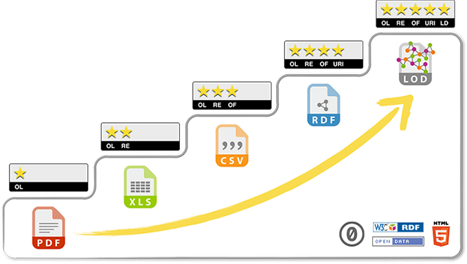

Make open data discoverable for search engines
Note: this blogpost was first published on the Liip Blog.
Open data portals are a great way to discover datasets and present them to the public. But they lack interoperability and it’s thus even harder to search across them. Imagine if you’re looking for a dataset it’s just a simple “google search” away. Historically there are lots and lots of metadata standards. CKAN as the de-facto standard uses a model that is close to Dublin Core. It consists of 15 basic fields to describe a dataset and its related resources.
In the area of Open Government Data (OGD) the metadata standard that is widely used is DCAT. Especially the application profiles (“DCAT-AP”), which are a specialization of the DCAT standard for certain topic areas or countries. For CKAN the ckanext-dcat extension provides plugins to expose and consume DCAT-compatible data using an RDF graph. We use this extension on opendata.swiss and data.stadt-zuerich.ch, as it provides handy interfaces to extend it to our custom data model. I’m a maintainer and code contributor to this extension.
When Dan Brickley working for Google, opened an issue on the DCAT extension about implementing schema.org/Dataset for CKAN, I was very excited. I only learned about it in December 2017 and thought it would be a fun feature to implement over the holidays. But what exactly was Dan suggesting?
With ckanext-dcat we already have the bridge from our relational (“database”) model to a graph (“linked data”). This is a huge step enables new uses of our data. Remember the 5 star model of Sir Tim Berners-Lee?
 Source: http://5stardata.info/en/, CC-Zero
So with our RDF, we already reached 4 stars! Now imagine a search engine takes all those RDFs, and is able to search in them and eventually is even able to connect them together. This is where schema.org/Dataset comes in. Based on the request from Dan I built a feature in ckanext-dcat to map the DCAT dataset to a schema.org/Dataset. By default it is returning the data as JSON-LD.
Even if you’ve never heard of JSON-LD, chances are, that you’ve used it. Google is promoting it with the keyword Structured Data. At its core, JSON-LD is a JSON representation of an RDF graph. But Google is pushing this standard forward to enable all kinds of “semantic web” applications. The goal is to let a computer understand the content of a website or any other content that has JSON-LD embedded. And in the future, Google wants to have a better understanding of the concept of a “dataset”, or to put it in the words of Dan Brickley:
It’s unusual for Google to talk much about search feature plans in advance, but in this case I can say with confidence “we are still figuring out the details!”, and that the shape of actual real-world data will be a critical part of that. That is why we put up the documentation as early as possible. If all goes according to plan, we will indeed make it substantially easier for people to find datasets via Google; whether that is via the main UI or a dedicated interface (or both) is yet to be determined. Dataset search has various special challenges which is why we need to be non-comital on the details at the stage, and why we hope publishers will engage with the effort even if it’s in its early stages…
This feature is deployed on the CKAN demo instance, so let’s look at an example. I can use the API to get a dataset as JSON-LD. So for the dataset Energy in Málaga, I could build the URL like that:
- Append “.jsonld”
- Specify “schemaorg” as the profile (i.e. the format of the mapping)
Et voilà: https://demo.ckan.org/dataset/energy-in-malaga.jsonld?profiles=schemaorg
This is the result as JSON-LD:
{
"@context": {
"adms": "http://www.w3.org/ns/adms#",
"dcat": "http://www.w3.org/ns/dcat#",
"dct": "http://purl.org/dc/terms/",
"foaf": "http://xmlns.com/foaf/0.1/",
"gsp": "http://www.opengis.net/ont/geosparql#",
"locn": "http://www.w3.org/ns/locn#",
"owl": "http://www.w3.org/2002/07/owl#",
"rdf": "http://www.w3.org/1999/02/22-rdf-syntax-ns#",
"rdfs": "http://www.w3.org/2000/01/rdf-schema#",
"schema": "http://schema.org/",
"skos": "http://www.w3.org/2004/02/skos/core#",
"time": "http://www.w3.org/2006/time",
"vcard": "http://www.w3.org/2006/vcard/ns#",
"xsd": "http://www.w3.org/2001/XMLSchema#"
},
"@graph": [
{
"@id": "https://demo.ckan.org/dataset/c8689e49-4fb2-43dd-85dd-ee243104a2a9",
"@type": "dcat:Dataset",
"dcat:contactPoint": {
"@id": "_:N71006d3e0205458db0cc7ced676f91e0"
},
"dcat:distribution": [
{
"@id": "https://demo.ckan.org/dataset/c8689e49-4fb2-43dd-85dd-ee243104a2a9/resource/c3c5b857-24e7-4df7-ae1e-8fbe29db93f3"
},
{
"@id": "https://demo.ckan.org/dataset/c8689e49-4fb2-43dd-85dd-ee243104a2a9/resource/5ecbfa6c-9ea0-4f5f-9fbe-eb39964c0f7f"
},
{
"@id": "https://demo.ckan.org/dataset/c8689e49-4fb2-43dd-85dd-ee243104a2a9/resource/b74584c7-9a9a-4528-9c73-dc23b29c084d"
}
],
"dcat:keyword": [
"energy",
"málaga"
],
"dct:description": "Some energy related sources from the city of Málaga",
"dct:identifier": "c8689e49-4fb2-43dd-85dd-ee243104a2a9",
"dct:issued": {
"@type": "xsd:dateTime",
"@value": "2017-06-25T17:02:11.406471"
},
"dct:modified": {
"@type": "xsd:dateTime",
"@value": "2017-06-25T17:05:24.777086"
},
"dct:publisher": {
"@id": "https://demo.ckan.org/organization/f0656b3a-9802-46cf-bb19-024573be43ec"
},
"dct:title": "Energy in Málaga"
},
{
"@id": "https://demo.ckan.org/organization/f0656b3a-9802-46cf-bb19-024573be43ec",
"@type": "foaf:Organization",
"foaf:name": "BigMasterUMA1617"
},
{
"@id": "https://demo.ckan.org/dataset/c8689e49-4fb2-43dd-85dd-ee243104a2a9/resource/b74584c7-9a9a-4528-9c73-dc23b29c084d",
"@type": "dcat:Distribution",
"dcat:accessURL": {
"@id": "http://datosabiertos.malaga.eu/recursos/energia/ecopuntos/ecoPuntos-23030.csv"
},
"dct:description": "Ecopuntos de la ciudad de málaga",
"dct:format": "CSV",
"dct:title": "Ecopuntos"
},
{
"@id": "https://demo.ckan.org/dataset/c8689e49-4fb2-43dd-85dd-ee243104a2a9/resource/c3c5b857-24e7-4df7-ae1e-8fbe29db93f3",
"@type": "dcat:Distribution",
"dcat:accessURL": {
"@id": "http://datosabiertos.malaga.eu/recursos/ambiente/telec/201706.csv"
},
"dct:description": "Los datos se corresponden a la información que se ha decidido historizar de los sensores instalados en cuadros eléctricos de distintas zonas de Málaga.",
"dct:format": "CSV",
"dct:title": "Lecturas cuadros eléctricos Junio 2017"
},
{
"@id": "https://demo.ckan.org/dataset/c8689e49-4fb2-43dd-85dd-ee243104a2a9/resource/5ecbfa6c-9ea0-4f5f-9fbe-eb39964c0f7f",
"@type": "dcat:Distribution",
"dcat:accessURL": {
"@id": "http://datosabiertos.malaga.eu/recursos/ambiente/telec/nodos.csv"
},
"dct:description": "Destalle de los cuadros eléctricos con sensores instalados para su gestión remota.",
"dct:format": "CSV",
"dct:title": "Cuadros eléctricos"
},
{
"@id": "_:N71006d3e0205458db0cc7ced676f91e0",
"@type": "vcard:Organization",
"vcard:fn": "Gabriel Requena",
"vcard:hasEmail": "gabi@email.com"
}
]
}Google even provides a Structured Data Testing Tool where you can submit a URL and it will tell you if the data is valid.
Of course knowing the CKAN API is good if you’re a developer, but not really the way to go if you want a search engine to find you datasets. So the JSON-LD that you can see above, is already embedded on the dataset page (check out the testing tool with just the dataset URL). So if you have enabled this feature, every time a search engine visits your portal, it’ll get structured information about the dataset it crawls instead of simply the HTML of the page.
Check the documentation for more information, but most importantly: if you’re running CKAN, give it a try!